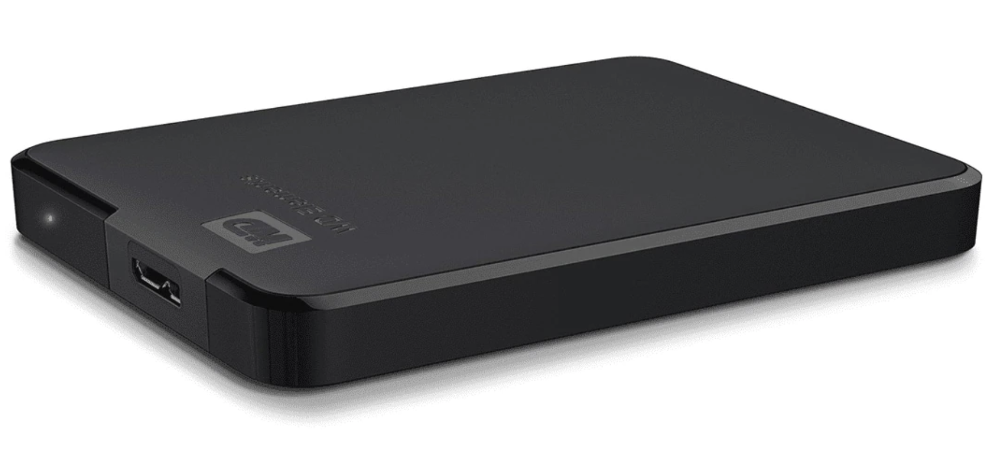

One of the tasks of a senior developer is to introduce architectural concepts to new junior developers joining the company. And if there are multiple microservices involved, which all use different approaches, it can be confusing. Some older microservices might use MVC, in a Web API context. The newer ones might use minimal APIs. A select few might do CQRS.
Ultimately, it all boils down to things like cohesion, coupling, and encapsulation.
The PC architecture is one of the simplest analogy you can use to explain these concepts to a junior developer. It would consist of the following components:
- A motherboard.
- A CPU, which can be an x86 or arm.
- Hard disk drives.
- A graphics card.
- Memory chips.

Right off the bat, we notice that everything is modular, and everything consists of components communicating through standardized interfaces. The CPU doesn’t communicate directly to RAM, it goes through the motherboard. Same with the graphics card, etc.
Coupling
Let’s assume we have created a very powerful PC for development. But after a while, we might want to turn it also use it as a gaming PC. We can swap out our old graphics card with a newer one, and very easily, and it doesn’t really impact the system in any way, because it doesn’t affect the rest of the system, and because it communicates with the rest through a PCI interface on the motherboard. This is an example of decoupling.
A simple analogy with for better understanding coupling is a Rubik’s cube.
Have you ever tried to solve one of these? If you don’t know the trick, what you will try to do is to solve one face first, and then try to focus on the others. Of course, this doesn’t work because the colors are coupled and trying to change the unsolved faces breaks the existing ones.
Encapsulation
An interesting fact about HDD drives is they have their own cache where data that’s accessed frequently is retrieved from it. But this is transparent to applications using the HDD.
The HDD itself has a printed circuit board and a controller and it communicates via the SATA interface.